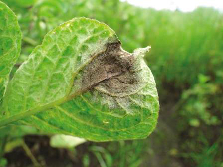
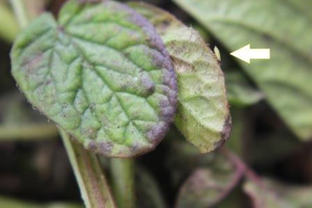

<!-- <ion-header>
  <ion-toolbar>
    <ion-title></ion-title>
  </ion-toolbar>
</ion-header> -->

<ion-content>
  <ion-row >
    <ion-card-content class="texto">
      {{nombre.titulopreg2}}
    </ion-card-content>
  </ion-row>


  <ion-row class="cuadro">
    <ion-col>
      <ion-item  routerLink="../../../hojas/lancha" >
        <ion-label>{{nombre.res9}}</ion-label>
      </ion-item>
    </ion-col>
    <ion-item >
      <ion-icon name="add-circle-outline"></ion-icon>
      <ion-icon (click)="manchacafeImage()"  color="success" name="images-outline"></ion-icon>
    </ion-item>
    <ion-row routerLink="../../../hojas/lancha" >
      <!-- (click)="manchacafeModal()" -->
      
    </ion-row>
  </ion-row>
  
  <ion-row class="cuadro">
    <ion-col>
      <ion-item routerLink="../../../hojas/roya"  >
        <ion-label>{{nombre.res10}} </ion-label>
      </ion-item>
    </ion-col>
    <ion-item >
      <ion-icon name="add-circle-outline"></ion-icon>
      <ion-icon (click)="pustulasImage()" color="success" name="images-outline"></ion-icon>
    </ion-item>
    <ion-row routerLink="../../../hojas/roya" >
      <!-- (click)="pustulasModal()" -->
      
    </ion-row>
  </ion-row>

  <ion-row class="cuadro">
    <ion-col>
      <ion-item routerLink="../../../hojas/trips" >
        <ion-label>{{nombre.res11}} </ion-label>
      </ion-item>
    </ion-col>

    <ion-item >
      <ion-icon name="add-circle-outline"></ion-icon>
      <ion-icon (click)="manchasplateadoImage()" color="success" name="images-outline"></ion-icon>
    </ion-item>

    <ion-row routerLink="../../../hojas/trips" >
      <!-- (click)="manchasplateadoModal()" -->
      
    </ion-row>
  </ion-row>

  <ion-row class="cuadro">
    <ion-col>
       <ion-item routerLink="../../../hojas/punta-morada" >
        <ion-label>{{nombre.res3}} </ion-label>
      </ion-item>
    </ion-col>
    <ion-item >
      <ion-icon name="add-circle-outline"></ion-icon>
      <ion-icon (click)="hojasmoradasImage()" color="success" name="images-outline"></ion-icon>
    </ion-item>
    <ion-row routerLink="../../../hojas/punta-morada" >
      <!-- (click)="hojasmoradasModal()" -->
      
    </ion-row>
  </ion-row>
  
</ion-content>